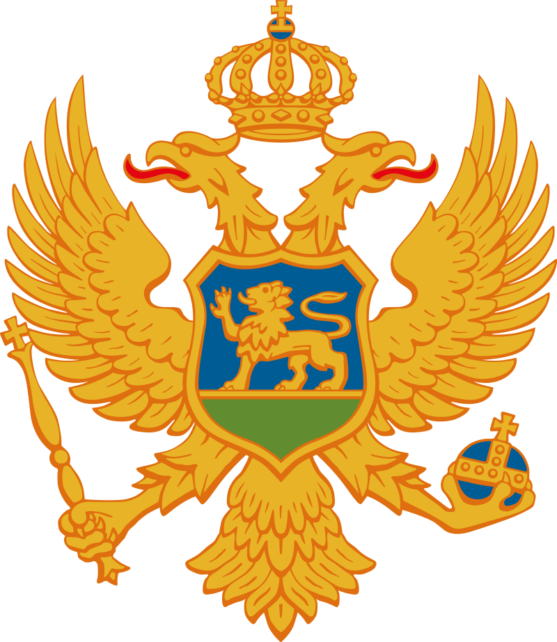
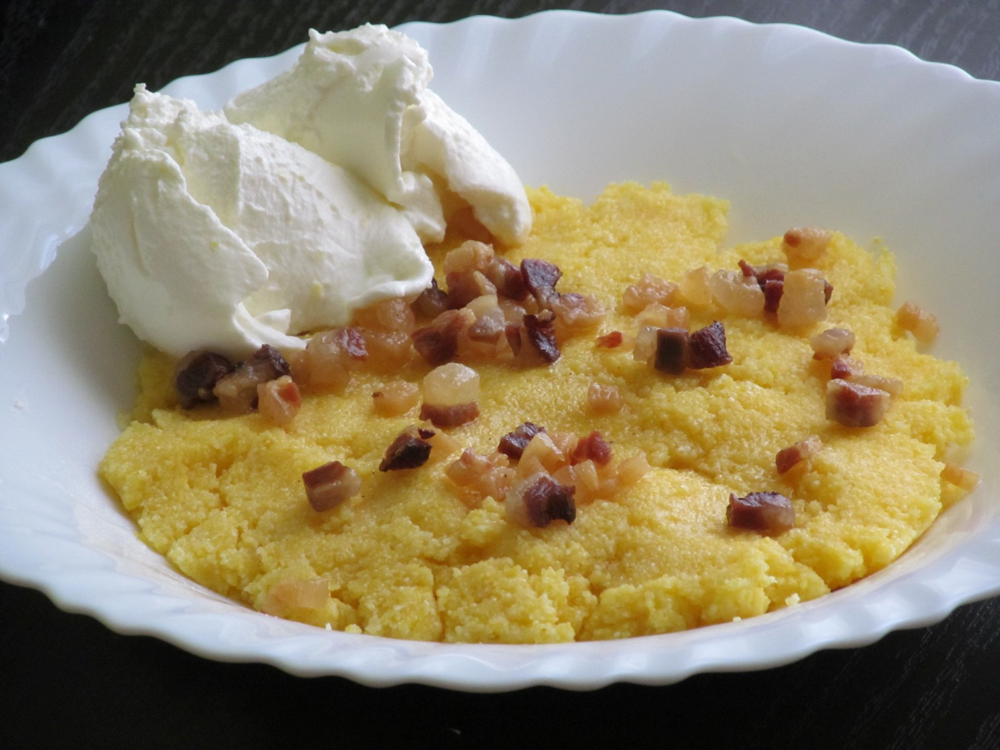

Cicvara


A traditional breakfast dish of Montenegro and the wider Balkan region! It's a corn porridge with milk, butter, and sour cream plus some salt.
Ingredients
- Milk: 1/2 L
- Corn Flour: 150 g
- Salt: 1 teaspoon
- Sour Cream: 600 mL
- Butter: 100 g
Steps
- Add butter, salt, and boiling cornmeal to boiling milk.
- Cook, stirring constantly, for about 15 minutes.
- Pour sour cream over the cooked cicvara and serve!
Source: Cicvara
Source: Cicvara Image